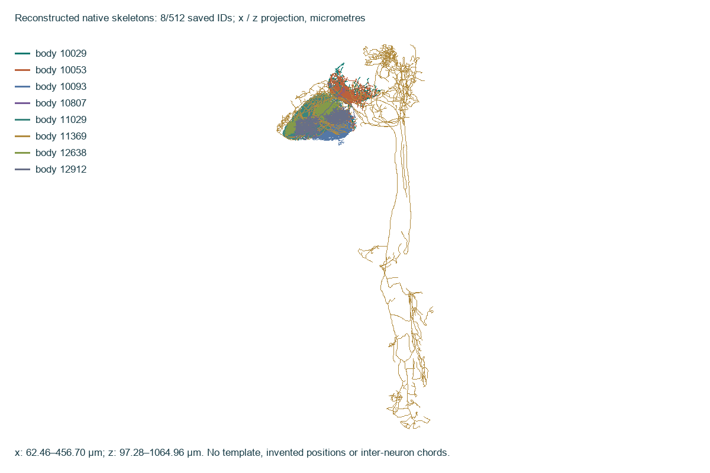
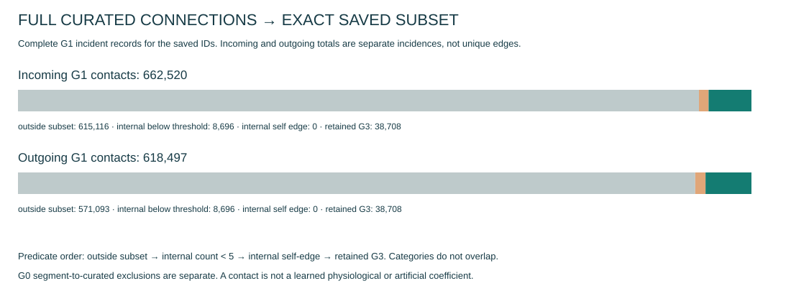
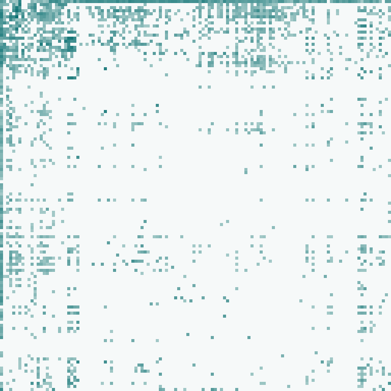
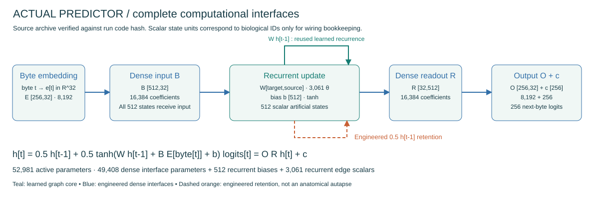
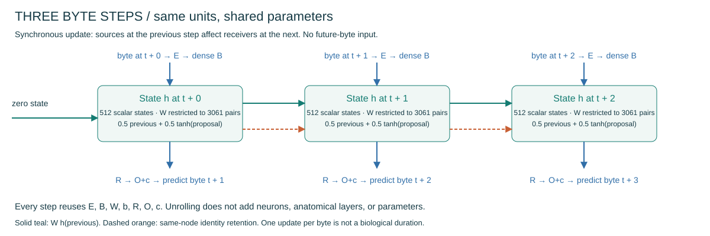
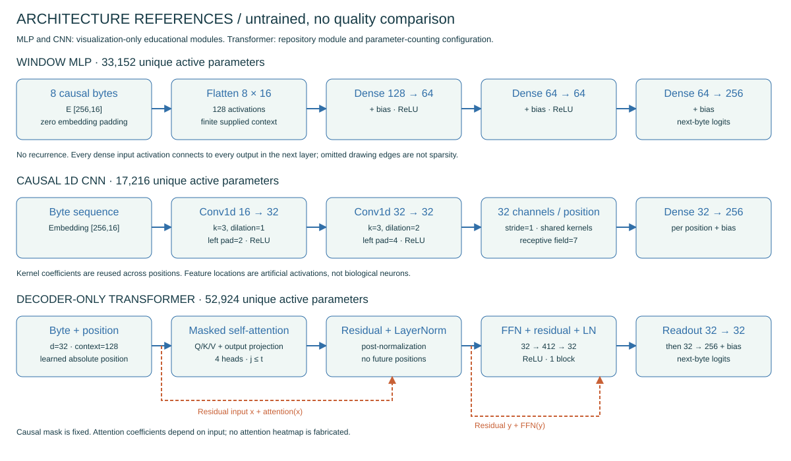
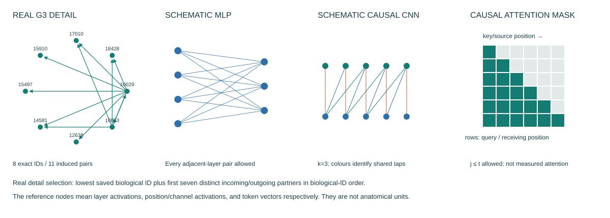

MaleCNS connectivity & architecture atlas
Exact graph 354ccf91b989f38883c0f72a0acb678f99ef7f7a4a52695197c2e7dca710534b · 512 nodes · 3061 pairs · 38708 contacts.
Interactive exact lookups: run ./visualization/viz serve --host 127.0.0.1 --port 8765.
Coverage
- G0 full released segment connectivity: not indexed. Official bulk file verified; full 151,856,684-row disk index deferred; no additional count threshold
- G1 curated-neuron graph: not indexed. Complete Traced inventory eligibility; valid isolates and null types preserved by implementation
- G3 exact saved subset: verified / complete. 512 IDs; 3061 directed pairs; 38708 contacts
- G1 subset and selected-neuron boundary evidence: complete. Complete source scan, only curated edges incident to exact selected IDs retained; not a full G1 index
- Native skeleton geometry: 8/512 subset skeletons. Real SWC, source 8nm units → micrometres exactly once; whole-CNS geometry/context not loaded
- Synapse coordinates / microscopy / meshes: not loaded. Not prerequisites for exact released pair access; large optional evidence products
- Neurotransmitter predictions: not loaded. Learned model weight sign is not biological transmitter identity
Real skeletons: 8/512 saved IDs, native x/z micrometre projection

Conserving incoming and outgoing boundary ledger

G3 contacts: rows receive, columns send; 128 bins; all edges included

Actual predictor

Same model through time

Untrained illustrative references

Local connection rules

Unresolved evidence
E_INCOMPLETE_INGEST: G0 not indexed. This panel is unavailable, not empty. Recovery: ./visualization/viz ingest-full --rss-mib 512 --storage-gib 64 --max-seconds 300
E_INCOMPLETE_INGEST: G1 not indexed. This panel is unavailable, not empty. Recovery: ./visualization/viz ingest-full --rss-mib 512 --storage-gib 64 --max-seconds 300
E_INCOMPLETE_INGEST: G2 not indexed. This panel is unavailable, not empty. Recovery: ./visualization/viz ingest-full --rss-mib 512 --storage-gib 64 --max-seconds 300
E_CHECKPOINT_UNSTABLE_OR_UNSAFE: Completed checkpoints include NumPy RNG pickle state rejected by tensor-only loading. No unsafe fallback. Exact copied bytes are retained. Recovery: Use snapshot-run --safe-export with a trusted tensor-only export; schema in docs/ERRORS.md.
FlyEM / HHMI Janelia, University of Cambridge, MRC LMB, Google Research. Official dataset catalogue; CC BY 4.0. No model-quality claim.